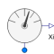

MassFractionsIdeal one port mass fraction sensor |

|
Information
This information is part of the Modelica Standard Library maintained by the Modelica Association.
This component monitors the mass fraction contained in the fluid passing its port. The sensor is ideal, i.e., it does not influence the fluid.
Parameters (1)
| substanceName |
Value: "water" Type: String Description: Name of mass fraction |
|---|
Connectors (2)
| port |
Type: FluidPort_a |
|
|---|---|---|
| Xi |
Type: RealOutput Description: Mass fraction in port medium |